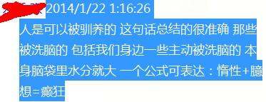

Conversation with 81184027 at Wed 22 Jan 2014 07:33:22 PM CST on 154115835 (webqq)
(01/20/2014 02:53:26 PM) 2903194835: 十分钟，腿不麻吗？
(01/20/2014 02:53:32 PM) 心成长-辽宁: 就是呼吸引导进入放松状态。
(01/20/2014 02:53:18 PM) ☂走在阳光下☂: 有什么作用？
(01/20/2014 02:53:42 PM) ☂走在阳光下☂: 闭眼吗
(01/20/2014 02:53:48 PM) 2903194835: :face99:
(01/20/2014 02:53:35 PM) 心成长-辽宁: 不麻呀
(01/20/2014 02:54:10 PM) ☂走在阳光下☂: 我还以为是通灵什么的呢
(01/20/2014 02:53:54 PM) 心成长-辽宁: 闭眼的
(01/20/2014 02:58:51 PM) ☂走在阳光下☂: 心灵做的这个 不就是管放松的吗
(01/20/2014 02:54:03 PM) ☂走在阳光下☂: 噢 噢
(01/20/2014 02:55:43 PM) 2903194835: 通灵术"召唤"走在阳光下
(01/20/2014 02:58:24 PM) ☂走在阳光下☂: 啊？
(01/20/2014 02:59:25 PM) 心成长-辽宁: 就是内在觉察
(01/20/2014 02:59:51 PM) ☂走在阳光下☂: OK~
(01/20/2014 05:47:00 PM) 3924614629: 1月20日，2014年的第20天。
愿我们收获活水吗哪，发出对神的感谢赞美。
愿我们跟随主，走荣神、益人、自己得操练的道路
旧约 创世记 41:17-42:17
诗 篇 18:1-15
箴 言 4:1-6
新约 马 太 13:24-46
有代祷事宜请告知
(01/20/2014 07:25:06 PM) 极致: 亲们 有需要网络兼职的 私聊我 每天10分钟 基本工资600每月 大学生每月补助300 想了解的加我QQ317877737
(01/21/2014 10:44:09 AM) 1626806856: :face85:
(07:33:17 PM) 咨询师-泪: 0.0
(01/21/2014 10:36:41 AM) 3924614629: 1月21日，2014年的第21天。
愿我们收获活水吗哪，发出对神的感谢赞美。
愿我们跟随主，走荣神、益人、自己得操练的道路
旧约 创世记 42:18-43:34
诗 篇 18:16-36
箴 言 4:7-10
新约 马 太 13:47-14:12
有代祷事宜请告知
(01/22/2014 08:31:47 AM) 柠檬-杭州: 杭州-导游(2513184920) 2014-1-21 14:24:30
快过年了，当大家在回家的火车上，看到过道里站着躺着的农民工朋友时，请不要因拥挤不便而厌烦他们，其实站票和坐票是一样的票价。因为他们不会网上订票或电话订票，奔波了一年，也和大家一样急切着回家。请体谅他们，有位置大家换着坐坐，挤着坐坐……小偷太多，他们的钱都随身携带，看见了提醒他们保管好，不要丢了辛苦挣的血汗钱。可以转发，传递正能量。无论世界怎么变，心中有善念总会有福报的！看了不要赞 要转发
(07:33:17 PM) 咨询师-泪: 0.0
(01/20/2014 02:53:26 PM) 青鸟: 十分钟，腿不麻吗？
(01/20/2014 02:53:32 PM) 心成长-辽宁: 就是呼吸引导进入放松状态。
(01/20/2014 02:53:18 PM) ☂走在阳光下☂: 有什么作用？
(01/20/2014 02:53:42 PM) ☂走在阳光下☂: 闭眼吗
(01/20/2014 02:53:48 PM) 青鸟: :face99:
(01/20/2014 02:53:35 PM) 心成长-辽宁: 不麻呀
(01/20/2014 02:54:10 PM) ☂走在阳光下☂: 我还以为是通灵什么的呢
(01/20/2014 02:53:54 PM) 心成长-辽宁: 闭眼的
(01/20/2014 02:58:51 PM) ☂走在阳光下☂: 心灵做的这个 不就是管放松的吗
(01/20/2014 02:54:03 PM) ☂走在阳光下☂: 噢 噢
(01/20/2014 02:55:43 PM) 青鸟: 通灵术"召唤"走在阳光下
(01/20/2014 02:58:24 PM) ☂走在阳光下☂: 啊？
(01/20/2014 02:59:25 PM) 心成长-辽宁: 就是内在觉察
(01/20/2014 02:59:51 PM) ☂走在阳光下☂: OK~
(01/20/2014 05:47:00 PM) pastorqi: 1月20日，2014年的第20天。
愿我们收获活水吗哪，发出对神的感谢赞美。
愿我们跟随主，走荣神、益人、自己得操练的道路
旧约 创世记 41:17-42:17
诗 篇 18:1-15
箴 言 4:1-6
新约 马 太 13:24-46
有代祷事宜请告知
(01/20/2014 07:25:06 PM) 极致: 亲们 有需要网络兼职的 私聊我 每天10分钟 基本工资600每月 大学生每月补助300 想了解的加我QQ317877737
(01/21/2014 10:44:09 AM) 溫存 ら: :face85:
(07:33:17 PM) 咨询师-泪: 0.0
(01/21/2014 10:36:41 AM) pastorqi: 1月21日，2014年的第21天。
愿我们收获活水吗哪，发出对神的感谢赞美。
愿我们跟随主，走荣神、益人、自己得操练的道路
旧约 创世记 42:18-43:34
诗 篇 18:16-36
箴 言 4:7-10
新约 马 太 13:47-14:12
有代祷事宜请告知
(01/22/2014 08:31:47 AM) 柠檬-杭州: 杭州-导游(2513184920) 2014-1-21 14:24:30
快过年了，当大家在回家的火车上，看到过道里站着躺着的农民工朋友时，请不要因拥挤不便而厌烦他们，其实站票和坐票是一样的票价。因为他们不会网上订票或电话订票，奔波了一年，也和大家一样急切着回家。请体谅他们，有位置大家换着坐坐，挤着坐坐……小偷太多，他们的钱都随身携带，看见了提醒他们保管好，不要丢了辛苦挣的血汗钱。可以转发，传递正能量。无论世界怎么变，心中有善念总会有福报的！看了不要赞 要转发
(07:33:17 PM) 咨询师-泪: 0.0
(01/20/2014 03:21:06 PM) 溫存 ら:
(07:35:38 PM) 1762249378: 
(07:36:48 PM) 1762249378: 我有个疑问：为什么有些人 会成为非常忠实的 不太正常的zong教信阳的 忠实粉丝和拥护者？这种人都有什么共同的特点
(07:37:23 PM) 光: 无知，轻信，盲从，随大流
(07:37:34 PM) 光: 不限于宗教
(07:37:35 PM) 1762249378: chuanxiao
(07:37:44 PM) 1762249378: 国家tongzhi
(07:37:52 PM) 光: 也限于传销
(07:37:59 PM) 光: 不
(07:38:05 PM) 1762249378: 哈哈
(07:38:15 PM) 光: 愚人的通病
(07:38:36 PM) 1762249378: 哦。也就是说被忽悠的那一帮人是 愚人，有些道理
(07:39:04 PM) 光: 大多数人都是愚人
(07:39:17 PM) 1762249378: 说实话，我接触过 quanneng神 的里面的人。
(07:39:35 PM) 光: 包括在这个群里的
(07:39:51 PM) 光: 也会犯这样毛病
(07:40:01 PM) 光: 只是随大流的形式不同
(07:39:59 PM) 1762249378: 我只是觉得他们的观点在有些方面比较次。但是没有发现他们的明显弱点
(07:40:11 PM) 光: 比如网络成瘾
(07:40:16 PM) 光: 色情成瘾
(07:40:15 PM) 1762249378: @光 有道理
(07:40:23 PM) 光: 赌博成瘾
(07:40:20 PM) 1762249378: 有道理
(07:40:27 PM) 光: 等等
(07:40:51 PM) 光: 自是大多数人看不清自己
(07:40:55 PM) 光: 只是
(07:41:03 PM) 光: 包括我在内
(07:41:07 PM) 1762249378: 哦。是啊。
(07:41:10 PM) 1762249378: 我也是
(07:41:34 PM) 光: 无知，轻信，盲从，随大流
(07:41:42 PM) 光: 这是愚人的通病
(07:42:11 PM) 光: 而这些愚人恰好遇上了传销，邪教，网游，赌博而已
(07:42:20 PM) 1762249378: 哦。原来是这样。
(07:42:29 PM) 光: 嗯
(07:43:24 PM) 1762249378: 邪教 的最终目的到底是什么呢？
(07:43:45 PM) 光: 物以类聚
(07:43:42 PM) 1762249378: 我一直很纳闷。难道就是没事找事，故意破坏
(07:43:47 PM) 1762249378: 哈哈
(07:43:56 PM) 光: 一群愚人聚在一起
(07:44:04 PM) 光: 方向自然不明
(07:44:18 PM) 光: 以盲引盲
(07:44:51 PM) 1762249378: 哦。
(07:46:35 PM) 1762249378: 看来我愚的程度是比较轻的，只是我这个人有时候 心肠太好了
(07:46:56 PM) 光: 嗯
(07:46:51 PM) 埃及无雪: 骗财劫色呗
(07:46:53 PM) 埃及无雪: :D:D
(07:47:08 PM) 光: 佛教称之为无明
(07:47:17 PM) 光: 我想想很有道理
(07:47:54 PM) 1762249378: 不懂啊。我是个相信 有上帝 ，但是任何宗教混杂，全盘吸收。全盘怀疑的人
(07:48:17 PM) 光: 角度
(07:48:37 PM) 光: 我尝试过一些方式去认识宗教
(07:48:59 PM) 光: 后来也跳出宗教用科学的眼光看这些现象
(07:49:12 PM) 1762249378: 哦。可以得到什么样的结果？
(07:49:23 PM) 光: 又换回一个普通人的角度去体会里面的道理
(07:49:29 PM) 1762249378: 哦。
(07:49:37 PM) 光: 感觉其实我自己
(07:49:48 PM) 光: 也是无明
(07:50:28 PM) 1762249378: 哦
(07:51:27 PM) 光: 当自己也能感受到这些的时候
(07:51:40 PM) 光: 就能理解这些人心中的烦恼和困苦了
(07:51:53 PM) 1762249378: 哦。看来我还没有体会到这一点。
(07:52:14 PM) 光: 从认识自己开始
(07:52:21 PM) 光: 少评价别人
(07:52:19 PM) 埃及无雪: 【图片未找到】
(07:52:26 PM) 光: 多自省自己
(07:52:34 PM) 1762249378: 哦。